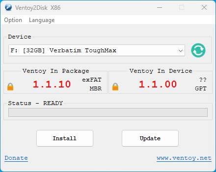
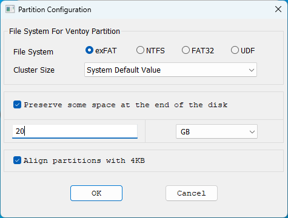
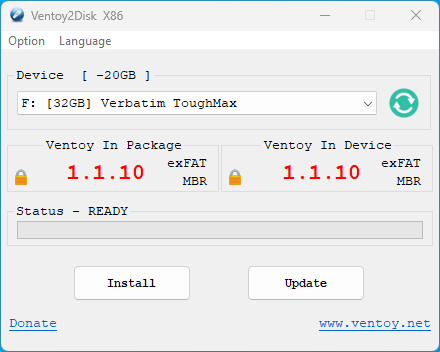
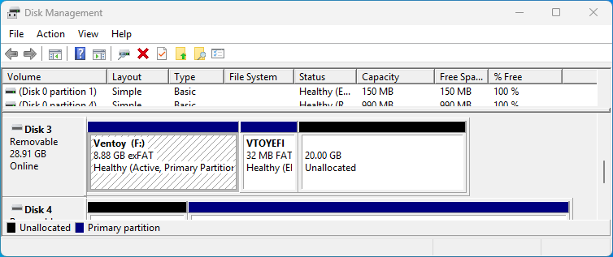
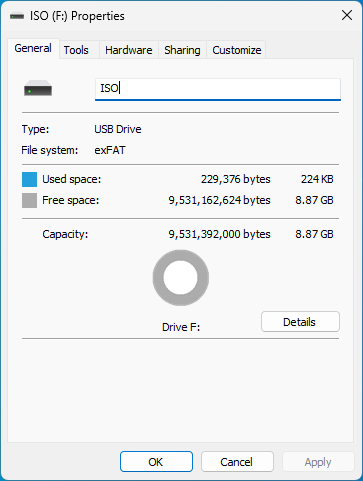
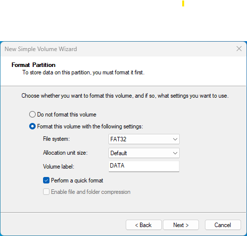
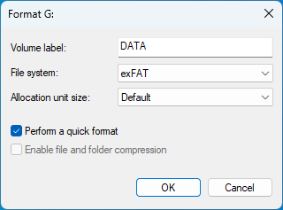

This guide walks you through the complete Windows setup process: installing Ventoy on your USB key with reserved space, then using Disk Management to create and label the ISO and DATA partitions.
Part 1 — Install Ventoy
Open Ventoy2Disk and select your USB key
Launch Ventoy2Disk.exe. Select your USB key from the Device dropdown. The tool shows the current Ventoy version on the device (if any) versus the package version. Before clicking Install, go to Option → Partition Configuration.

Reserve space at the end of the disk
In Partition Configuration, set the file system to exFAT and check Preserve some space at the end of the disk. Enter the amount of space you want to reserve for the ISO and DATA partitions — in this example, 20 GB is reserved. Leave Align partitions with 4KB checked. Click OK.

Install Ventoy
Back in the main window, click Install. Ventoy will format the key and install the bootloader. When done, the status shows READY and both version numbers match. Notice the device label now shows [-20GB] — confirming the reserved space is set aside.

Part 2 — Label the ISO Partition and Create DATA
The reserved space is now unallocated at the end of the USB key. The main Ventoy partition (already exFAT) just needs to be renamed ISO. Then use Windows Disk Management to create the DATA partition in the unallocated space.
Open Disk Management: press Win + X → Disk Management.
Locate your USB key and the unallocated space
Find your USB key in the disk list. You will see the large Ventoy (exFAT) partition, a small VTOYEFI partition, and the unallocated space you reserved at the end.

Rename the Ventoy partition to ISO
Right-click the large Ventoy exFAT partition → Properties. Change the volume label from ventoy to ISO and click OK. No formatting needed — Ventoy already created this partition as exFAT.

Create a new volume in the unallocated space
Right-click the unallocated space → New Simple Volume. Follow the wizard. At the Format Partition step, leave the file system as FAT32 (the wizard default) and set the volume label to DATA. Check Quick Format and complete the wizard.

Reformat the DATA partition as exFAT
Once the wizard completes, right-click the new DATA partition → Format. Set the file system to exFAT, confirm the volume label is DATA, check Quick Format, and click OK.

Final Step — Copy your ISO
Open the ISO partition in Explorer and copy your LiaisonOS ISO file into it. That is all — Ventoy scans the partition automatically at boot and presents every ISO it finds in the boot menu.
Your key is ready. Boot from it and LiaisonOS will start directly — no installation required.